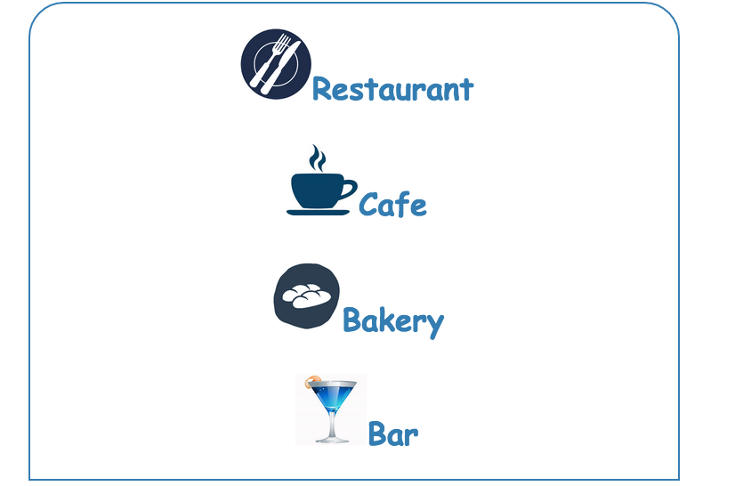
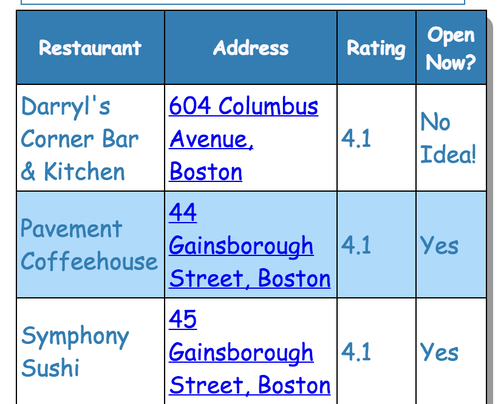
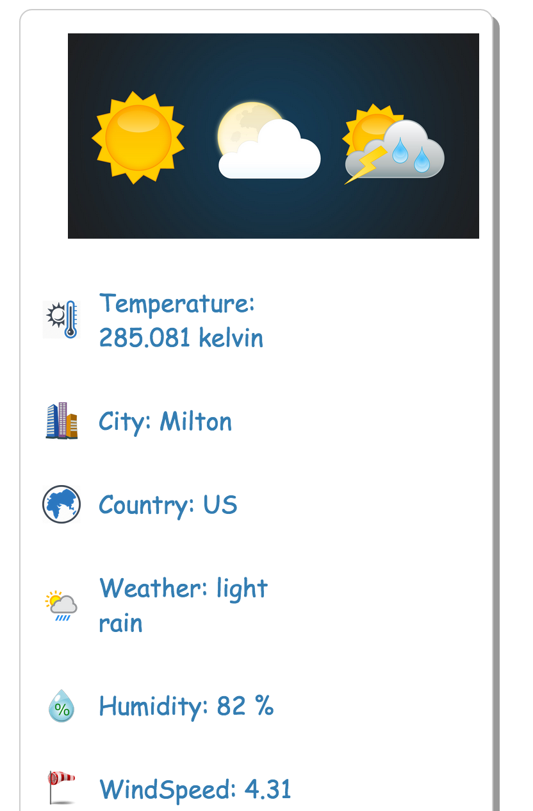
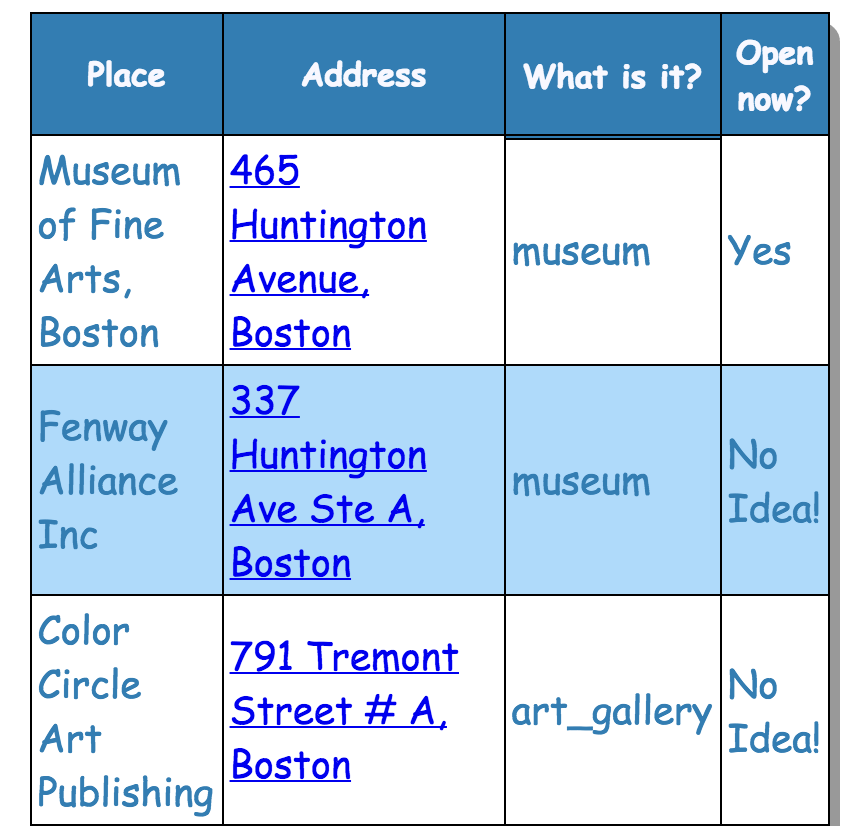
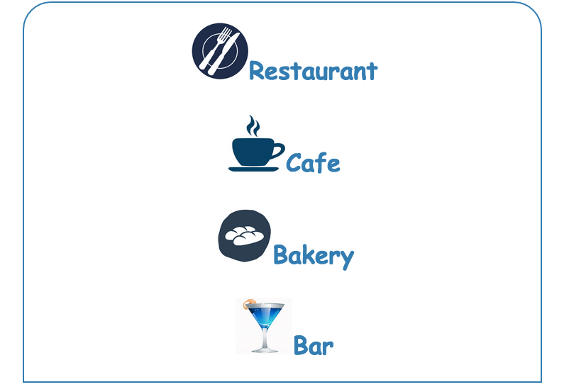
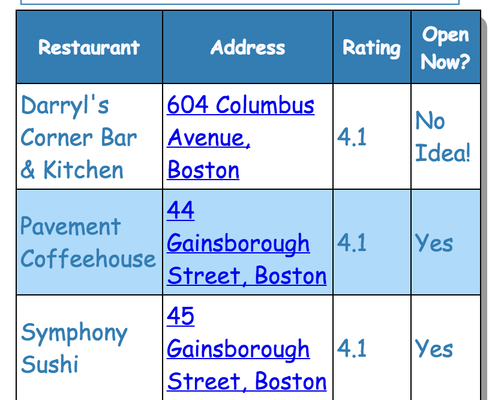
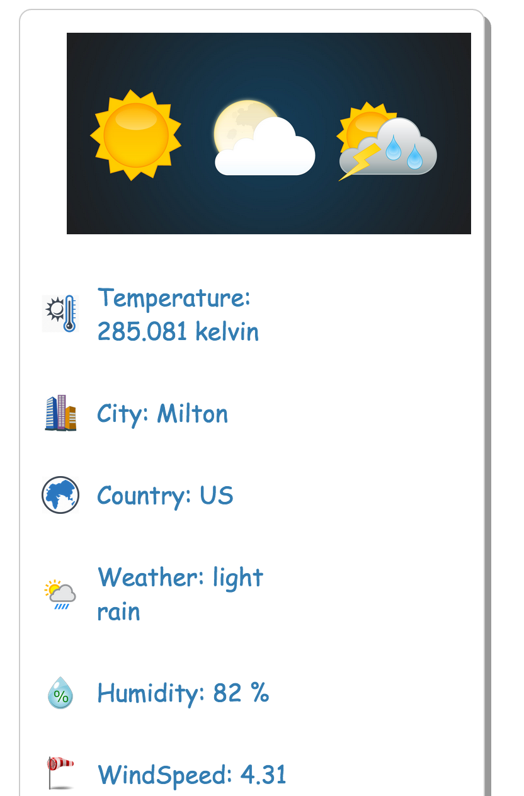
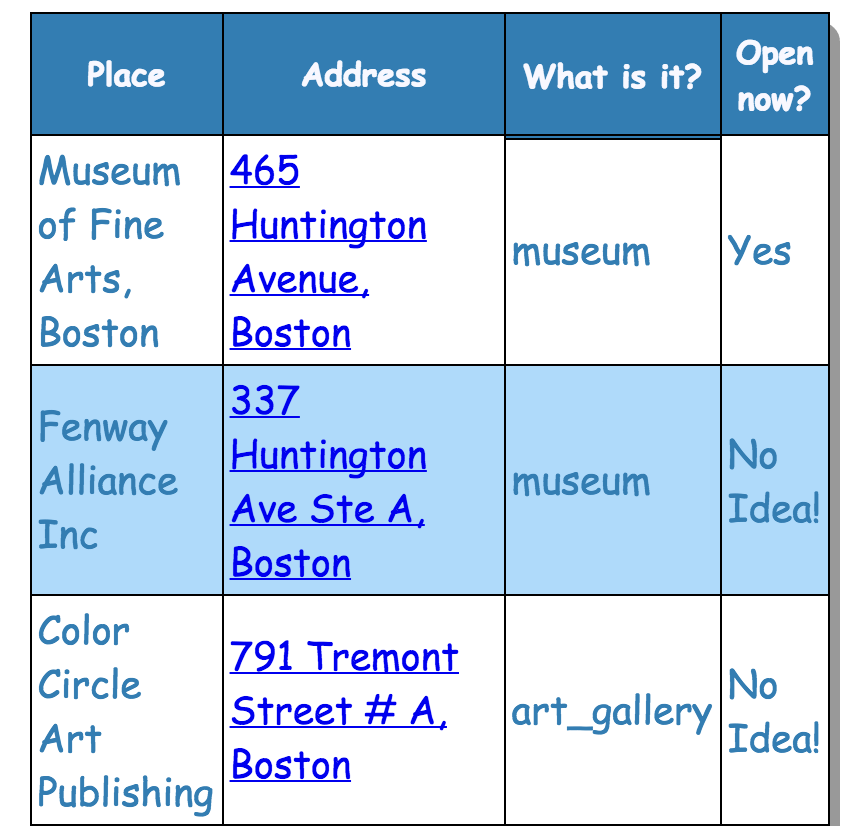

Responsive CSS feature of Search Places tab
Feature Screenshots
Responsive Map and Top Menu:
Responsive Menu for tabs:
Responsive Food Filter Menu:

Responsive Food details table: 
Responsive Climate: 
Responsive Places table: 
Responsive Menu for tabs:
Responsive Food Filter Menu:

Responsive Food details table: 
Responsive Climate: 
Responsive Places table: 
Just Like the Home Page, the Search Places page is equipped with Responsive CSS.
The top menu turns into a vertical one, the image frame disappears as the screen
is adjusted for lesser width. Also, the tabs get aligned one below the other
and the tables width appears to get smaller.
Note that this page has been tested on following cell phones:
View HTML Source
View JS Source
- iphone 4s
- 1+
View HTML Source
View JS Source